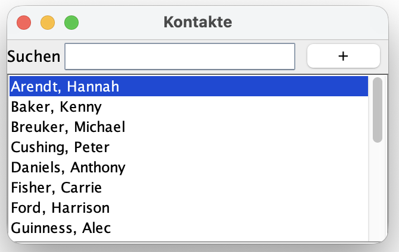

Praktikum 12: Grafische Oberflächen II
In diesem Praktikum wollen wir grafische Benutzeroberflächen (engl. graphical user interfaces, GUI) in Java unter Nutzung der IDE IntelliJ IDEA und der Swing-Bibliothek weiter entwickeln und um Funktionalitäten (u.a. Klick-Events) erweitern.
🚀 Lernziele
Sie können:
- Ereignisse in Java Swing GUI verwenden
- GUI-Komponenten mit Funktionalitäten versehen (z.B. Klicken von Elementen)
- eine Trennung von Modell und Darstellung für GUIs umsetzen
🤔 Vorbereitung
Arbeiten Sie bitte nochmal die Vorlesungsunterlagen zum Thema Graphical User Interfaces (GUI) durch (siehe Lernraum). Wiederholen Sie dabei insbesondere die Konzepte zur Ereignisbehandlung sowie die Möglichkeiten, Event-Listener in Java Swing umzusetzen.
Bringen Sie bitte Ihre Implementierungen der Klassen Contact, AddressBook sowie die Darstellungen (Views, Dialoge) von ShowContactDialog und AddressBookDialog und davon abhängende Klasse aus dem Praktikum 11 mit.
📝 Pflichtaufgaben (1 Bonuspunkt)
1 - Trennung von Darstellung und Modell
Öffnen Sie bitte Ihr IntelliJ-Projekt aus dem letzten Praktikum. Zur Trennung von Darstellung und Modell erstellen Sie bitte die folgenden Packages in IntelliJ: Model und View. (MVC-Konzept: siehe GUI-Vorlesung). Klicken Sie dazu rechts unter src und New -> Package.Kopieren Sie alle Ihre Dialoge in das View-Package und Ihr Modell (u.a. AddressBook, Contact) in das Model-Package. Ihre Main-Klasse ist die einzige Klasse, die außerhalb der Packages bestehen bleiben soll. Sie müssen in den Dialog-Klassen ggf. Ihre Modell-Klassen (Contact usw.) durch Imports bekannt machen. Bringen Sie bitte zunächst einmal Ihren bestehenden Code (inkl. der neuen Packages) wieder zum Laufen.
2 - Neue ContactList-Klasse
Teilaufgaben:
-
Neue ContactList-Klasse: Erstellen Sie im Package View
eine neue Klasse ContactList, die von AbstractListModel<Contact> erbt. Diese Klasse soll
über ein Attribut List<Contact> verfügen, die als leere Liste im Konstruktor initialisiert werden soll.
Überschreiben Sie bitte die Methoden public int getSize() sowie public Contact getElementAt(int index),
die die Größe der Liste sowie ein Element der Liste (an einem bestimmten Index) zurückgeben sollen.
Fügen Sie bitte noch die folgende update-Methode hinzu:
public void update(Collection<Contact> contacts) { this.contacts.clear(); this.contacts.addAll(contacts); this.fireContentsChanged(this, 0, contacts.size()); } - toString von Contact überschreiben: Überschreiben Sie bitte die toString-Methode Ihrer Contact-Klasse. Übergeben Sie hier bitte Vor- und Nachnamen der Kontakte als einen String. Das ist wichtig, um Ihre ContactList im AddressBookDialog richtig darzustellen.
-
Legen Sie im AddressBookDialog nun eine Instanz filteredContacts Ihrer
neuen Klasse ContactList-Klasse an. Rufen Sie die Methode update auf, der Sie bitte die Kontakte
vom AddressBook als Parameter übergeben. Ersetzen Sie Ihre bisherige JList bitte durch die folgende:
JList<Contact> contactList = new JList<>(filteredContacts); contactList.setSelectionMode(ListSelectionModel.SINGLE_SELECTION); contactList.setSelectedIndex(0);
3 - AddressBookDialog und ShowContactDialog verbinden

Wir werden nun unseren AddressBookDialog aus dem letzten Praktikum um Funktionalitäten erweitern. Genauer gesagt, wollen wir den ShowContactDialog durch Klicken eines Kontakts in der Liste von AddressBookDialog automatisch öffnen. Bearbeiten Sie dazu bitte die folgenden Teilaufgaben:
Teilaufgaben:
- MouseListener für contactList: Erweitern Sie Ihre contactList im AddressBookDialog um einen MouseListener. Nutzen Sie dafür bitte die in der Vorlesung eingeführte MouseAdapter-Klasse. Implementieren Sie dies zunächst erstmal als anonyme Klasse innerhalb des Dialogs (siehe Vorlesung).
-
showContact-Methode: Ergänzen Sie eine Methode
showContact im AddressBookDialog, die den ausgewählten (=geklickten) Kontakt
nun im ShowContactDialog darstellen soll. Die Methode getSelectedIndex gibt Ihnen den
ausgewählten Eintrag der JList zurück. Mit der Methode getElementAt Ihrer ContactList-Klasse
können Sie dann (zusammen mit dem Index) auf den Kontakt zugreifen.
Instanziieren Sie hier einen neuen ShowContactDialog und stellen Sie diesen dar.
⭐ Zusatzaufgaben (1 Bonuspunkt)
Es genügt, wenn Sie eine der folgenden Zusatzaufgaben bearbeiten, um einen Bonuspunkt zu erhalten.4 - Suche nach Kontakten
Erweitern Sie Ihre aktuelle Anwendung um eine Kontaktsuche. Beachten Sie dazu bitte folgende Anforderungen:Anforderungen:
- Es soll das Textfeld, das bereits angelegt wurde, genutzt werden.
- Ergänze Sie bitte eine findByPattern(String text)-Methode in Ihrem AddressBook, die eine Liste von Kontakten zurückgeben soll, die dem eingegeben Text entsprechen. Dafür sollten Sie eine Volltextsuche über alle Kontaktdaten nutzen (siehe: letztes Praktikum).
- Sobald im Textfeld die Taste Enter gedrückt wurde (KeyEvent.VK_ENTER), soll die Liste automatisch entsprechend des Suchtextes aktualisiert werden. Nutzen Sie dafür bitte KeyListener sowie die KeyAdapter-Klasse.
- Es soll die Methode filterContacts(String text) im AddressBookDialog ergänzt werden. Dieser soll die Kontaktliste durchsuchen (siehe findbyPattern-methode) und die Darstellung der Kontaktliste mittels der update-Methode von der ContactList aktualisieren. Als Parameter bekommt diese Parameter die Liste mit den Suchergebnissen.
5 - Ein AddContact-Dialog
Erstellen Sie bitte einen AddContactDialog, der durch Klicken des bereits bestehenden +-Button geöffnet werden soll. Der Dialog soll für jedes Element der Contact-Klasse (inkl. Address) ein Textfeld sowie dazugehöriges Label mit dem Namen des Attributs haben. Durch einen Button mit der Aufschrift "Hinzufügen" soll ein neuer Kontakt erstellt werden. Ein weiterer Button soll das Abbrechen (und Schließen) des Dialogs ermöglichen.Überlegen Sie bitte, was Sie in den Paketen Model und View ergänzen müssen, um diese Funktionalität zu ermöglichen. Denken Sie auch daran, dass die ContactList im AddressBookDialog nach dem Hinzufügen eines Kontakts auch aktualisiert werden muss.